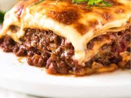

Back to homepage
New York Chicken and Rice

Description
New York Chicken and Rice is a popular street food in New York City. It consists of chicken and yellow rice, with a side of salad and pita bread.
Ingredients
- 1 cup of basmati rice
- 1 1/2 cups of chicken stock
- 1 onion, chopped
- 2 cloves of garlic, minced
- 1 red bell pepper, chopped
- 1 yellow bell pepper, chopped
- 1 teaspoon of cumin
- 1 teaspoon of paprika
- 1 teaspoon of turmeric
- 1 teaspoon of coriander
- 1 teaspoon of cinnamon
- 1 teaspoon of cayenne pepper
- 1 teaspoon of salt
- 1 teaspoon of black pepper
- 2 chicken breasts, cut into bite-sized pieces
- 1/4 cup of olive oil
- 1/4 cup of chopped parsley
Instructions
- Heat the olive oil in a large skillet over medium heat.
- Add the onion, garlic, and bell peppers to the skillet and cook until the vegetables are soft, about 5 minutes.
- Add the chicken to the skillet and cook until browned on all sides, about 5 minutes.
- Add the cumin, paprika, turmeric, coriander, cinnamon, cayenne pepper, salt, and black pepper to the skillet and stir to combine.
- Add the rice and chicken stock to the skillet and bring to a boil.
- Reduce the heat to low, cover, and simmer for 20 minutes, or until the rice is cooked through.
- Remove the skillet from the heat and let sit, covered, for 5 minutes.
- Fluff the rice with a fork and stir in the parsley.
- Serve the New York Chicken and Rice with a side of salad and pita bread.